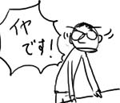
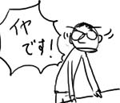
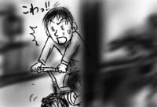
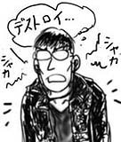

また寝坊です．春の陽気は恐ろしい．
来週から，グループに新しく派遣の人が来ることになり，グループ長が「あっちのブロックに席が空いてるから，そこに座ってもらおう」と言っていたのですが，派遣の人が女性だと判明するや否や，僕の席の周りの先輩達が「ミズグチくん，今日のうちにあっちの空席へ移動しておいて！」「代わりにミズグチくんの席に座ってもらうから！」と口々に言い始めました．
断じて動くもんか！
また寝坊です．春の陽気は恐ろしい．
来週から，グループに新しく派遣の人が来ることになり，グループ長が「あっちのブロックに席が空いてるから，そこに座ってもらおう」と言っていたのですが，派遣の人が女性だと判明するや否や，僕の席の周りの先輩達が「ミズグチくん，今日のうちにあっちの空席へ移動しておいて！」「代わりにミズグチくんの席に座ってもらうから！」と口々に言い始めました．
断じて動くもんか！
会社に間違えて古い眼鏡をかけて行ってしまいました．
古い眼鏡は，主に，お風呂読書や就寝前後などの汚れやすい/壊しやすいシーンで保険のために着用しているのですが，今朝は寝ぼけて枕元の古い眼鏡をかけたまま自転車に飛び乗って会社まで行ってしまったのでした．
10年以上前のものなので，今の主流デザインと違って非常にレンズが大きく，その様は知人にカマキリ呼ばわりされるほど．着用シーンが就寝前後に偏っているため，古い眼鏡で外出するのは何だかパジャマで往来を歩いているようで恥ずかしい．おまけに，すでに度が違って来ているため，一日中これでVDT作業をしていると目が疲れて仕方がない…．
というわけで，帰り道では眼鏡を外して自転車で疾走してみたのでした．
眼鏡を外すと急に視界が開けたように感じるのですが，それはすなわち，普段ならとっくに視界から消えるはずのものがいつまでも視界の横に居座り続けるということで，ただでさえ物がよく見えないことと合わせて，通り過ぎた電柱や民家を視界の横で捉えてはビビるということを家まで延々繰り返す羽目になりました．
後ろから見てるとおもしろかったと思います(ドライバの人は気が気ではありません)．
大宮WAVEにて，Autechre「draft7.30」(WARP)をゲットしました．賛否両論だった前作「Confield」も個人的には全肯定(ターンエー)でかなり聞き込んだのですが，今回はさらにそれを押し進めたサウンドになっており，言うなれば無人島級です．いや，もっと言うなら恒星間船級です．
例えそれが，永野のりこの漫画に書かれがちな「この宇宙船にあの娘を無理矢理乗せてしまえば，もう僕を好きになるしかないんだ」的アレでナニな状況であったとしても，BGMで流れているのはこれでありたい(ありえません)．
内に向かってゆっくりと滑り落ちて行く感覚が心地よく，延々聴いていたいと思わせます．ものすごい勢いでループ再生．というわけで，ヘヴィメタは一日限りで後方へ．なんだか申し訳ない(誰に謝っているんですか)．
そして，大宮ブックオフは最近，在庫に代わり映えがないので何とかした方がよい(明らかに僕の週末が代わり映えしていません)．
花見をする予定だったのに，一日中，雨がどしゃ降りで，散りました(僕の心が)．
なんだかぐんぐんとデストロイな気分になってくるうち， ふと「自分にはヘヴィメタが足りないのではないか」と思い当たりました．というわけで，中古CD屋まで出かけ，衝動的にヘヴィメタのCDを購入．出来心というのは恐ろしいなぁ．ヘヴィメタは学生時代，友人から勧められて何枚か聴いたきりなので，全く詳しくありませんが，悪さがインフレして突き抜けているのでおもしろいですな．ドクロとかのジャケに，革ジャン．なんて悪そうなんだ．
というわけで，中古屋でプッシュされていたChildren of BodomとかいうバンドのCDを言われるがままに購入してきたのですが．うわぁ，なんか，これはこれでいい気がして来た！うわぁなんか，本当にデストローイ！とか言ってる！もう，速いわ，悪いわで大変！
そんなに長くない曲(4分くらい)が，テンション高めのまま40分という適度な長さ続くので，つい何度も聴いてしまいました．なんか，耳についちゃったよ．雨音はデストロイの調べ．
それもこれも雨が悪い！花見も悪い！悪い音楽ハズ・カム！(デスボイスで)